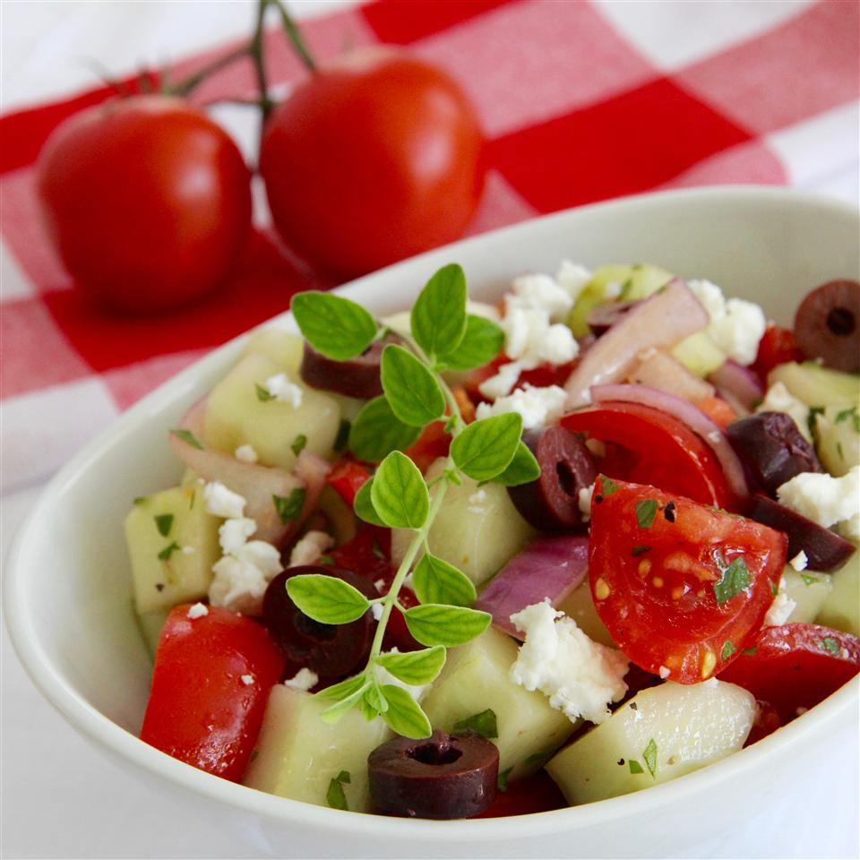

Greek Salad

Description
This recipie provies a tasty and low-fat Greek Salad.
Ingredients
- 3 large ripe tomatoes, chopped
- 2 cucumbers, peeled (optional) and chopped
- 1 small red onion, chopped (can substitute with 3 green onions)
- 1/4 cup olive oil
- 4 tsp lemon juice
- 1 1/2 tsp dried oregano
- salt and pepper to taste
- 1 cup crumbled feta cheese
- 6 black Greek olives, pitted and sliced
Steps
- In a shallow salad bowl, combine tomatoes cumner, and onion
- Sprinkle with oil, lemon juice, oregano, and salt and pepper to taste
- Sprinkle feta cheese and olives over salad
- Serve